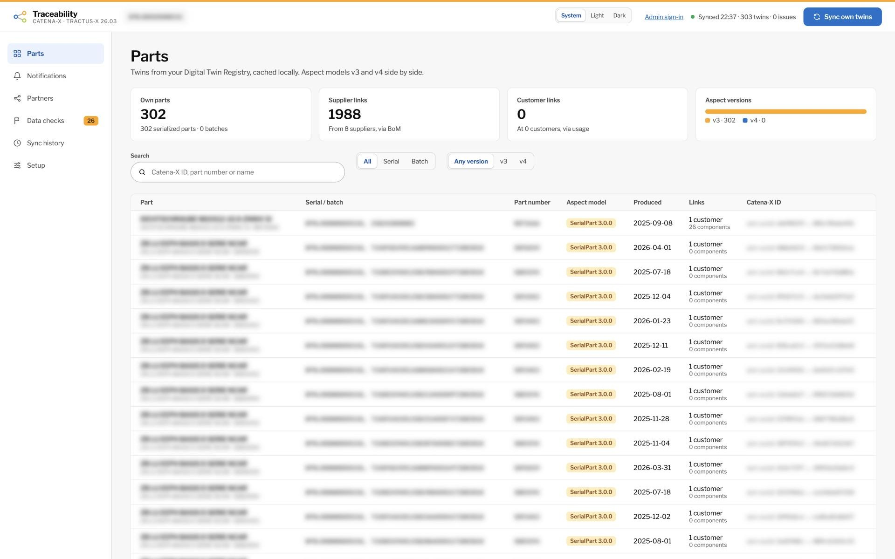

Catena-X · Traceability KIT
A lightweight Traceability KIT app — and why it can work where Trace-X stalled.
[Presenter name] · [Company] · October 2026
The problem
01
Narrow the scope to the exact serial numbers and batches — not a whole model year.
02
A quality alert goes downstream, to the direct customers that received the parts.
03
A quality investigation goes upstream, to the direct supplier of the suspect component.
Catena-X answers this across companies — without anyone handing over their full bill of materials.
Catena-X Traceability · 2
What the network tried
Built in Eclipse Tractus-X (traceability-foss, Apache-2.0) to show the use case end to end:
Trace-X backend
Trace-X frontend
IRS
EDC
Digital Twin Registry
Submodel server
Keycloak
PostgreSQL
A full stack to install before the first alert could be sent.
Catena-X Traceability · 3
Trace-X today
Jun 2025
Last commit on main (10 June 2025)
15.0.1
Last release, May 2025
5 releases
Tractus-X releases without it: 25.09 to 26.09. Last included in 25.06.
The use case is alive — Traceability KIT 8.0.0 shipped with 26.03. The app that was meant to carry it is not.
Sources: github.com/eclipse-tractusx/traceability-foss · tractus-x-release CHANGELOG · Catena-X Traceability · 4
Diagnosis
IRS walked the whole supply chain for each question. Every hop meant discovery, a contract negotiation, a registry lookup and a submodel read — in asynchronous jobs.
The app came with its own IRS and the full infrastructure around it. Hard to run, hard to adopt next to what a company already operates.
The 26.09 release notes list IRS as not compatible with Saturn connector policies, tested only on EDC 0.12.2 with Jupiter policies.
Tractus-X 24.03, 24.05 and 24.08 release notes: “No execution of Load-, Performance- or Penetration Tests.”
Source: tractus-x-release CHANGELOG · Catena-X Traceability · 5
The key difference
OEM app asks for the tree
discover · negotiate · DTR · submodel
Tier-1
discover · negotiate · DTR · submodel
Tier-2 … Tier-n
One question waits for the whole chain to answer.
OEM: finds affected vehicles locally
quality alert, forwarded by Tier-1
Tier-1: finds affected modules locally
quality alert (KIT notification)
Tier-2: detects a defective batch
Each company answers one level, from its own data.
Catena-X Traceability · 6
Our approach
Every participant already runs an EDC, a Digital Twin Registry and a wallet. The app uses them; it does not ship them.
Only direct partners are read. Deeper levels travel through notifications, hop by hop. No IRS.
Contract agreements and access tokens are kept per partner and asset; twins live in a local cache.
SerialPart, Batch, BoM and Usage in v3 and v4 map to one internal model. Partners upgrade at their own pace.
Catena-X Traceability · 7
Architecture
Core: sync, one-level tree, affected parts
Aspect adapters: v3 · v4 · industry_core
Notifications: KIT API 1.2.1 + 2.0.0
Dataspace client: Tractus-X SDK
Local cache · web UI · guided setup
EDC connector
Digital Twin Registry
Submodel server
Identity · BPNL
DSP
Customers and suppliers, through their own connectors
Python · FastAPI · Tractus-X SDK · PostgreSQL · React — one container, on Docker Compose or Helm, configured in the browser.
Catena-X Traceability · 8
Fit with the network
| What we see | How the app handles it |
|---|---|
| Most partners still publish SerialPart 3 | Reads v3 and v4 into one internal model |
| Jupiter policies end with 2026 | Saturn (DSP 2025-1) first; Jupiter (DSP 0.8) for partners still on it |
| The KIT mandates Notification API 1.2.1; 2.0.0 is newer | Receives both; sends the highest version the partner offers |
| 26.09 moves models to industry_core | Already reads them; model IDs live in one registry |
| IRS is not compatible with Saturn policies | No IRS dependency |
Sources: Traceability KIT 8.0.0 · sldt-semantic-models · tractus-x-release CHANGELOG · Catena-X Traceability · 9
Side by side
| Trace-X | This app | |
|---|---|---|
| Cross-company tree | Recursive walk through IRS | One level; notifications hop by hop |
| Infrastructure | Bundled stack, IRS included | Uses the EDC and DTR you already run |
| Answers from | Asynchronous jobs per request | Local cache, refreshed by sync |
| Connector policies | IRS not ready for Saturn | Saturn, and Jupiter for partners not yet moved |
| Aspect versions | Tied to its release | v3 and v4 side by side |
| Status | Not in Tractus-X since 25.09 | Tested against a production connector, October 2026 |
Catena-X Traceability · 10
Where we are
303 twins · 0 issues
synced in a local test against a production registry and EDC, in 7.5 minutes
2,192 · 204
links to 9 suppliers and 1 customer, from bills of material and usage
Three companies, real EDCs
An alert travels Tier-2 → Tier-1 → OEM on the Tractus-X umbrella, and back
252 automated tests
14 official aspect payload versions, v3 to industry_core v4

A local test against a production connector — names, serials and BPNL blurred
Catena-X Traceability · 11
Roadmap
Phase 1 · done
Aspect adapters, registry sync, local cache, tree, UI
Phase 2 · done
Direct partners via EDC; alerts, investigations, forwarding
Phase 3 · done
Three-company umbrella lab; local test against a production EDC
Phase 4 · next
Alerts with real partners; block notifications, ZeroKmFailure, 26.09
Timeline: [weeks per phase] · Team: [people]
Catena-X Traceability · 12
The ask
01
[2–3 direct partners] willing to exchange alerts in a test setup
02
[Notification offers and usage policies agreed with the pilot partners' connectors]
03
[Sponsor and budget] to run the pilot and phase 4
Catena-X Traceability · 13
Same Traceability KIT. One hop at a time.
[Presenter name] · [email] · github.com/pedrobtmartins/catena-x-simplified